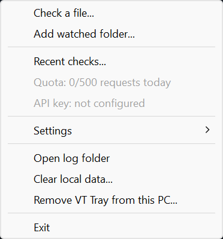
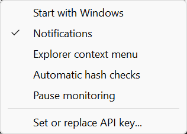
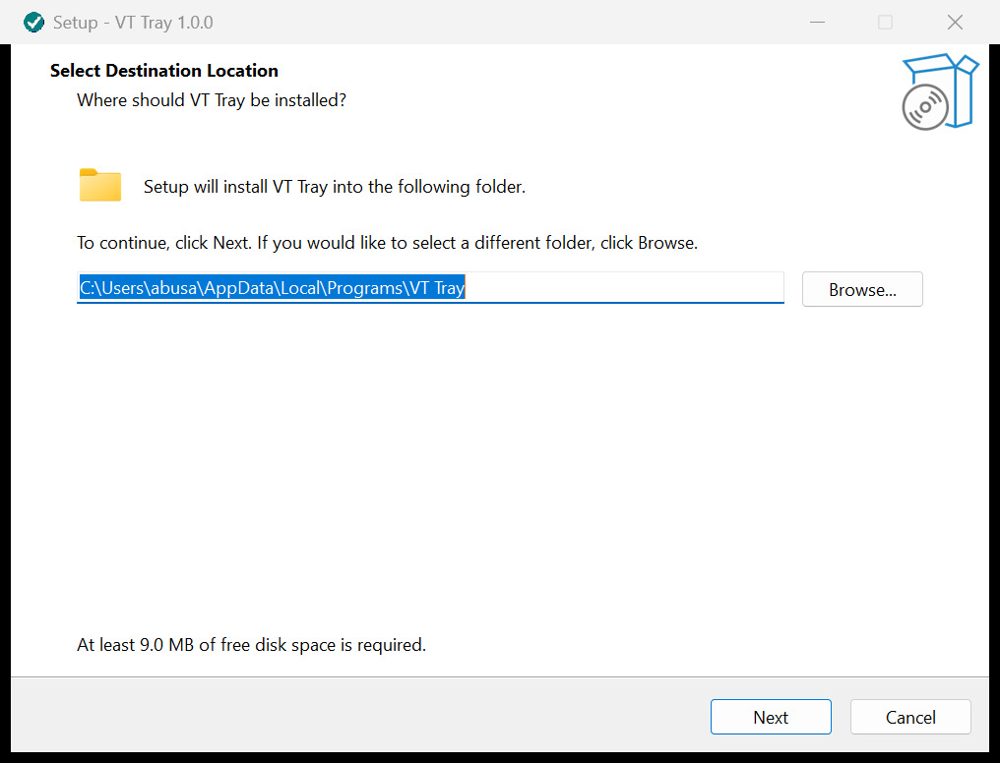

VirusTotal checks from your Windows tray
VT Tray watches the folders you choose, fingerprints new programs on your PC, and looks up only their hashes. Nothing is uploaded unless you confirm it, file by file.


What it does
Hash first
Check any file from the tray or from Explorer. Only its SHA-256 fingerprint is sent, and known results come back in seconds.
Consent before every upload
Unknown files can be uploaded after a confirmation showing the name, size, fingerprint, and a community-sharing warning. No is the default. The report opens when the analysis finishes.
Folder monitoring
New programs and scripts in watched folders are announced once they stop changing. Automatic hash lookups are opt-in.
Explorer menu
Check with VT Tray never uploads. Upload with VT Tray... always asks first. Both sit under Show more options.
Stays within the free API
One quota gate enforces 4 requests a minute, 500 a day, and 15.5K a month, keeps 100 a day for manual checks, and warns you before a limit.
Light on your PC
About 12 MB of memory and effectively no CPU while idle. The budget is checked on every build.
Screenshots




Install
- Download
VTray-Setup-<version>.exefrom the latest release and run it. It installs for your account only and adds a Start menu shortcut. - Right-click the tray icon, open Settings, and choose Set or replace API key. Paste your free VirusTotal API key.
- Use Check a file, add a watched folder, or turn on the Explorer menu.
Uninstall any time from Settings > Apps. It removes startup and Explorer entries, the saved key, settings, cache, and logs. A portable build is attached to each release too.
Privacy
- No telemetry, no accounts, no servers of our own. VT Tray talks only to VirusTotal.
- Only file names are sent with uploads, never folder paths. Logs never contain your key.
- Files you upload are shared with VirusTotal's security community, so only upload files you are allowed to share.
- VirusTotal results are advisory. VT Tray never deletes, quarantines, or changes your files.